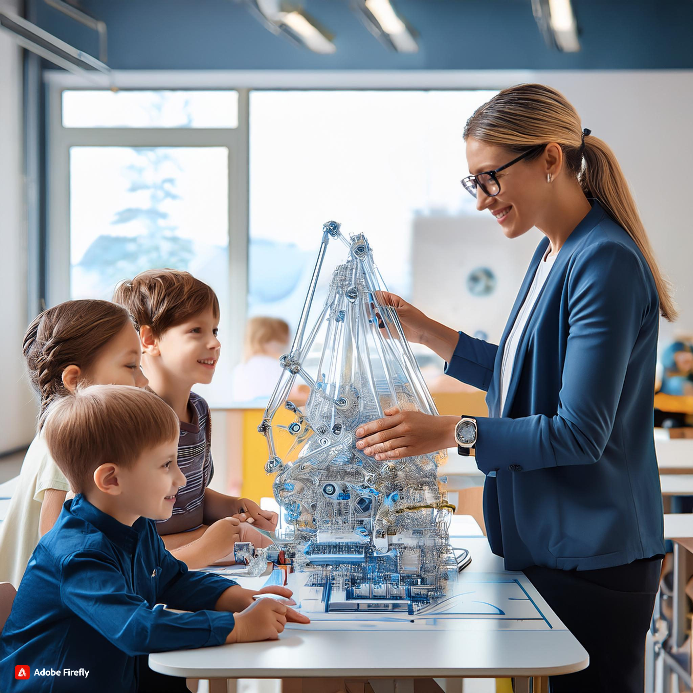

"The Significance of Engineering in Early Childhood Education"
Introduction and Importance of Engineering in Early Childhood Curriculum
Early childhood education must include engineering if it is to promote creativity, ingenuity, and problem-solving abilities. Children learn to create, develop, test, and refine their ideas through engineering activities, which foster resilence and critical thinking. Children are encouraged to think creatively and investigate several approaches to problems through engineering challenges, which aid in the development of an experimental and iterative mindset. Early exposure to engineering ideas also establishes the groundwork for STEM education, which helps kids become more rational and methodical thinkers, which will help them face obstacles in school and in life.( Engineering for kids:October 5, 2023)

Resources, Materials, and Digital Technologies
Traditional Resources and Materials:
- Buiding Blocks and LEGO:Essential resources for creating and assembling constructions that let kids play with stability, symmetry, and balance.
- Craft Resources: Cardboard, paper, tape, glue, and string for prototypes and models.
- Instruments and Attachments:Simple instruments that allow for hands on examination of mechanical ideas include child-safe screwdrivers, nuts, bolts, and gears.
Digital Technologies:
- Engineering games and apps: These include apps that let kids build and solve problems virtually, such as Toca Builders, Simple Machines by Tinybop, or LEGO Digital Designer.
- 3D Printers:3D printers are useful for creating and producing 3D models, which allow kids to get hands-on practice with contemporary engineering instruments.
- Robotics kits: These combine engineering and technology with basic robotics and coding.Examples of such kits are LEGO WeDO and Bee-Bots.
Learning Experiences by Age Group
0-2 Years:
- Stacking and Sorting Blocks:Block stacking and sorting are easy task that help improve motor skills and spatial awareness. You can also sort objects by size and form or stack blocks.
- Rolling Objects: Introduce fundamental ideas of motion and gravity by conducting experiments with rolling automobiles or balls down ramps.
- Investigating Cause and Effect: To promote early engineering thinking, use basic toys such as push-and-go automobiles to investigate how actions result in reactions.
2-3 Years:
- Easy Building Projects: Try balancing and stability by constructing buildings or bridges out of blocks.
- Water Play Engineering: Building paper boat and show the float of paper in water this provide basic concept of floating.
- Shape and Structure:Creating paper planes and others different shapes using others materials, developinga an understanding of form and function.
3-5 Years:
- Designing and Building: These days variety of builidng toys are available in the market so by showing the design and encouraging them to build such design helps improve creativity.
- Building Bridges and Towers: Developing an understanding of engineering concepts like tension and compression while designing and testing structures out of recycled materials or building blocks.
- Drawing building structures: Drawing is also an essential part of an engineering which helps the child to learn the designing work also.
6-8 Years:
- Robotics and Coding: Introducing entry level robotics kits that allow kids to combine technology and engineering to create and program their own robots.
- Design thinking projects:By involving kids in the design process, parents may encourage creativity and critical thinking in their children by having them identify problems, come up with solutions, build prototypes, and test their ideas.
- Group Work: Creating a separate group in class and asking them for designing which improves group working abilities and develop good communicating skills.
Pedagogical Practices and Teaching Strategies
- Promoting Iterative Design: Stress the value of experimentation, letting kids make several versions of their concepts to test and improve them.Also, motivate them to see failures as teaching moments.
- Problem-Based Learning: Encouraging youngsters to generate and test solutions to real-world problems or difficulties can help to foster critical thinking and creativity through problem-based learning.
- Encouraging Teamwork: Encourage group projects where kids design and build together to learn how to communicate, exchange ideas, and solve problems as a team. This will help kids become more collaborative and team players.
- Disciplinary Learning: To create a comprehensive learning experience, integrate engineering with other subject areas including math ( measurement and geometry),science ( Examining forces and materials), art(design and aesthetics).
- Providing Open-Ended Materials and Challenges: Offer a variety of materials and challenges that allow for multiple solutions, encouraging children to think creatively and explore different possibilities.
By implementing these resources, learning experinences,and pedagogical practices, early childhood teachers can effectively use the engineering curriculum to foster creativity in young children, helping them develop essential skills for future learning and innovation.